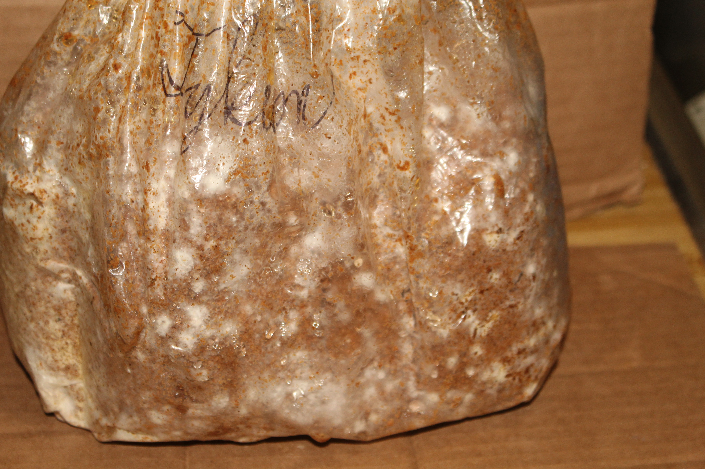
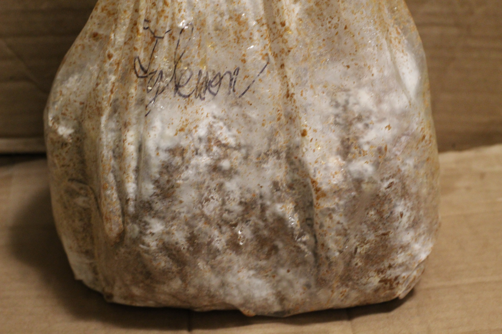
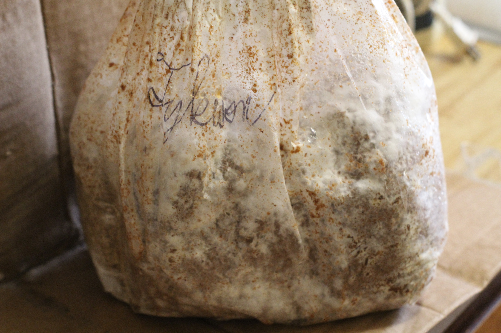

The chronicle of fungal propagation and eventual harvest from our class kits.
(In truth it, is what our instructors paid for each fungus kit. Further inquiry is needed.)
Our instructors from Change Food For Good taught us some rudiments of raising fungi, and supplied kits which will yield a few harvests of edible Lion's Mane fungi if tended properly. With their guidance and the utilities at Collective Focus, we readied these kits and took them home.
Though our class supplied us for this go, I'd like to know
how much materials to repeat it would cost. A shallow search suggests that kits may
be available for $28-32 (prior to shipping and tax.) I still want to compare the total
price of individual trustworthy components (bags, substrate, pellets, and mushroom spawn.)
Our hydroponic farm system project taught us that purchasing components alone can sometimes
be more economical despite the greater preparation time.
At Collective Focus, we abided by procedure to fill our filter bags with substrate, pellets,
and grain spawn, then pasteurized and inoculated them to grow at home.
The fungi colonized their container quite thoroughly by day 19, but I waited until day
21 to cut it open in case it wanted to spread even further. The sporocarp(s) has been apparent
and growing steadily since day 24.
Since cutting the bag open, I relocated it to a tall box to keep sunlight out. I've also started to mist it with water from a spray bottle daily. But I ponder:
>Is there an optimal time of day to mist it?
>>How many times should it be done daily?
There have thankfully been few notable impediments to this
project.
While the materials were already gathered for us, we didn't have enough time at Collective Focus to
pasteurize the mixture as well as we would have liked.
At home, the initial challenge was safe storage because of limited space, but the culture
fit neatly atop a tall shelf in a curtained closet.
I had to relocate to another building just as the Lion's Mane was fruiting, but
I was still able to take it with me and water it. I also harvested it a few days later than I would have liked,
and fear that may hinder its next flushes of growth.
Here is a visual log of the mushrooms' gradual colonization of the substrate and
subsequent fruiting. Initially, I took a photo roughly every 2-3 days, but began to do so more
frequently (twice or thrice daily) once fruiting bodies began to form. They developed swiftly at that
phase!
On day, 22, I cut small "X"s (or +s) into the broadest sides of the bag. I made the one in back smaller.
Once cut open, the fruiting bodies developed rapidly. I misted them when a spray bottle once to thrice a day.
On Day 35, I harvested the mushrooms. They were beginning to brown, indicating maturity.
I wrapped the removed mushrooms in paper towel, then refigerated them. It'd have been
better to use small paper bags as well (just as I see mushrooms stored and sold at
farmers markets,) but I had none.
I also considering measuring the mushrooms as they grew, but decided against it. In a calmer situation,
I definitely would, though.
Developmental Progress
Colonization



Pinning and Fruiting
I also untied the bag, rolled it up, and pinned the ends. After that, I placed the fungus in a cardboard box with flaps, so
I had some way to shelter it from incoming sunlight.Fruiting Bodies Mature
The smaller mushrooms in back never grew as large or swiftly as the other.
First Flush Harvest
The results were uniquely delicious. Some sites and studies I've seen report that Lion's Mane contains various vitamins and
nutrients that can support brain and immune health. It can be consumed cooked or raw, or even powdered or used in smoothies.
I found it chewy and a bit dry, so I opted to use it in stir fry meals or soups. I'd certainly welcome more meals with it.
But it remains to see if additional flushes will develop, and the marks left behind where I removed the first harvest concern
me. Updates will persist as I learn or see more.
This project has yet to end, and so cannot yet be decisively concluded. However, I will amass a list of ideas and considerations that may improve this process or lead to future experiments.
There is no integration yet, but I would like to add fungus and insect APIs to the website--I so often photograph them outdoors, yet don't always have means to identify them. It could also give a preliminary diagnosis of any plant/fungus health issues. If and once I add them, they may be an extension of the existing plant identifier page, and the process will be detailed here.